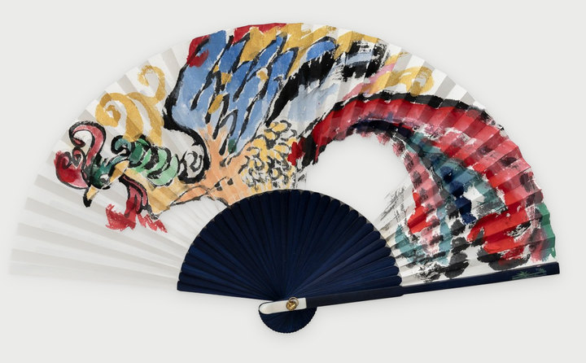

The Fan – Dance That Opens the Dawn부채 – 새벽을 여는 춤

Into the phoenix's dance, which heralds a new beginning, I poured Korea's traditional five colors, Obangsaek: yellow, blue, white, red and black. East, west, south, north and center, every direction of the world gathers within the beat of a single bird's wings. I hoped its energy, resonant even in stillness, would bring peace and vitality to busy hearts.
Koreans of old stitched these five colors into children's sleeves to ward off misfortune and invite blessing. Each time I wave this fan, I pray, as with a small amulet, that my restless mind will settle and grow round. Perhaps what truly opens the dawn is a mind that has quietly settled.
새로운 시작을 알리는 봉황의 춤에 우리 전통의 오방색, 황·청·백·적·흑을 실었다. 동서남북과 가운데, 세상의 모든 방위가 한 마리 새의 날갯짓 안에 모인다. 고요한 순간에도 깊은 울림을 주는 그 기운이 바쁜 마음에 평화와 활력이 되기를 바랐다.
옛사람들은 아이의 저고리 소매에 오방색 색동을 이어 붙여 액을 막고 복을 빌었다. 이 부채를 부칠 때마다 들뜬 마음이 가라앉고 둥글어지기를, 작은 부적처럼 나는 빈다. 새벽을 여는 것은 어쩌면 그렇게 고요히 가라앉은 마음이다.